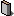

| 作品名： | 私の父 |
| 作品名読み： | わたしのちち |
| 著者名： | 堺 利彦 |
| 分類： | NDC 914 |
| 文字遣い種別： | 新字新仮名 |
| 備考： |
| 分類： | 著者 |
| 作家名： | 堺 利彦 |
| 作家名読み： | さかい としひこ |
| ローマ字表記： | Sakai, Toshihiko |
| 生年： | 1871-01-15 |
| 没年： | 1933-01-23 |
| 人物について： | 福岡県京都郡豊津村生まれ。貧しい家に生まれるが、地元の中学を主席で卒業。第一高等中学校へ進むものの、放蕩し中退。英語教師や新聞記者、小説家と職を転々とするが、1899（明治32）年「万朝報」に入社。黒岩涙香・内村鑑三・幸徳秋水らと交わり、理想団を結成して社会主義を主張する。しかし1903（明治36）年日露戦争時に主戦論を取った万朝報を幸徳・内村とともに退社、平民社を結成して「平民新聞」で非戦論を唱えた。1908（明治41）年赤旗事件で入獄し、その間に大逆事件が起こるが、獄中のため罪を問われなかった。出獄後、1910（明治43）年に日本初の翻訳会社である売文社を大杉栄らと始める。1922（大正11）年日本共産党の設立に参加し、初代委員長となるが、のちに党を離れ、無産政党運動に転向した。晩年、満州事変が起こった際にも反戦運動の先頭に立ち、脳溢血で路傍に倒れたときも、反戦委員会の帰途で、最後まで非戦・反戦の人であった。著書に「家庭の新風味」、訳書に「共産党宣言」（幸徳秋水と共訳）など。（大久保ゆう） |
| 底本： | 日本の名随筆49 父 |
| 出版社： | 作品社 |
| 初版発行日： | 1986（昭和61）年11月25日 |
| 入力に使用： | 1988（昭和63）年1月20日第4刷 |
| 校正に使用： | 1989（平成元）年10月31日第7刷 |
| 底本の親本： | 堺利彦伝 |
| 出版社： | 中公文庫、中央公論社 |
| 初版発行日： | 1978（昭和53）年4月 |
| 入力： | もりみつじゅんじ |
| 校正： | 今井忠夫 |
| ファイル種別 | 圧縮 | ファイル名（リンク） | 文字集合／符号化方式 | サイズ | 初登録日 | 最終更新日 |
|---|---|---|---|---|---|---|
| zip | 1470_ruby_18921.zip | JIS X 0208／ShiftJIS | 7214 | 2000-11-15 | 2005-06-28 | |
|  .bookファイル | なし | 1470.book | JIS X 0208／ShiftJIS | 14339 | 2000-11-15 | 2000-11-15 |
| なし | 1470_18922.html | JIS X 0208／ShiftJIS | 16256 | 2005-06-28 | 2005-06-28 |
●作家リスト：公開中
[あ]
[か]
[さ]
[た]
[な]
[は]
[ま]
[や]
[ら]
[わ]
[他]
●作家リスト：全
[あ]
[か]
[さ]
[た]
[な]
[は]
[ま]
[や]
[ら]
[わ]
[他]
●トップ ●インデックス／全 ●作家別作品リスト